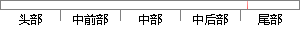

系统主要由硬件和软件两部分组成：硬件包括
片段位置图

相似结果
相似片段：
动聚焦算法、计算动词控制器以及图像处理算法，设计了主从通信协议，并通过串口驱动PIC从机。 5.1系统总体结构设计 5.1.1系统构成 芯片显微自动拍照系统主要由硬件和软件两部分组成：硬件包括显微镜、步进电机驱动板、三维电控载物台以及 USB2.0接口的CMOS 摄像头；软件则主要由图像采集、运动控制以及图像拼接融合三部分构成，系统组成
| 对比库： | WriteCheck云资源库 |
| 来源： | www.yangsky.com 查看来源 |
| 发布时间： | 2014-01-18 |
| 相似率 | 100% （严重抄袭） |